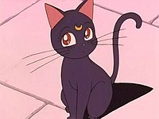
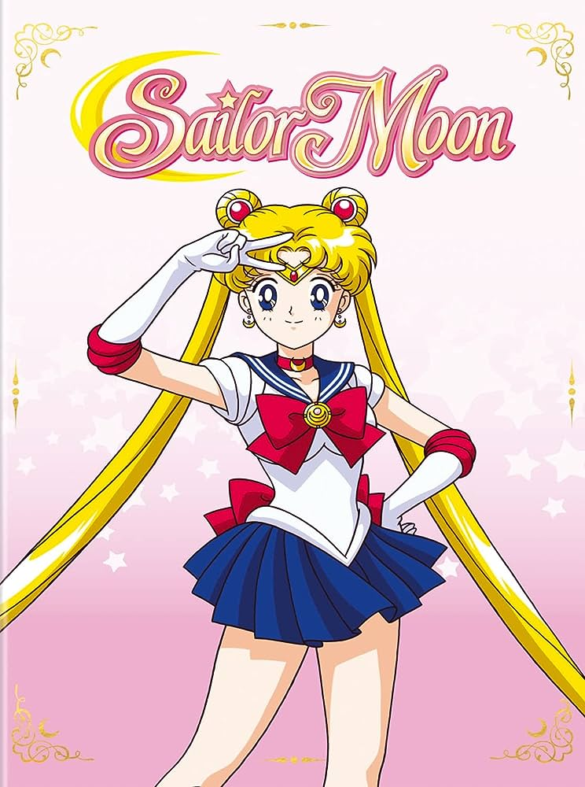

- Luna

- Artemis
- Diana

"Sailor Moon" sigue la historia de Usagi Tsukino, una adolescente torpe y llorona que descubre que es la reencarnación de una guerrera lunar llamada Sailor Moon. Con la ayuda de su gata Luna, Usagi encuentra a otras Sailor Scouts (Sailor Mercury, Sailor Mars, Sailor Jupiter y Sailor Venus), y juntas luchan contra las fuerzas del mal que amenazan la Tierra. A lo largo de la serie, las chicas buscan el Cristal de Plata, enfrentan diversos enemigos, descubren sus pasados y protegen el mundo mientras desarrollan lazos de amistad y amor.
Martínez Reyes Juan Emilioc - 2IM10